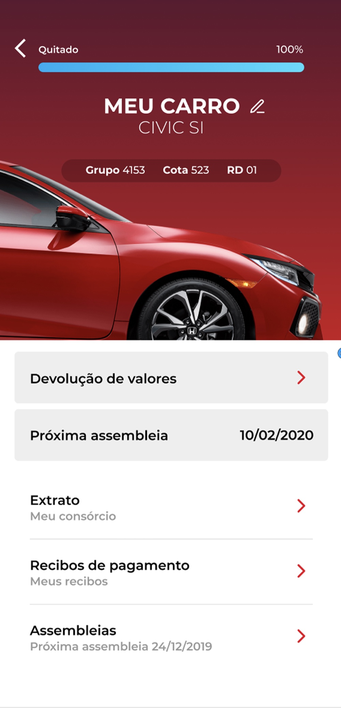

HSF Financial Services
A redesign of the consortium screens in the HSF mobile app: the card people see first and the detail view behind it. This page compares the screens before and after, side by side or with a slider, and shows the component sheet the new version is built from.
- ClientHSF
- PlatformMobile app
- Interface languagePortuguese (Brazil)
- PeriodFeb 2021 – Jul 2021
- My roleUX/UI design at Venturus


Background
An app for vehicle financial services that had been worked on before I joined it. The problem was mostly how the prototypes were organised and the lack of components for the design assets.
Plan
I made a plan to organise and refactor parts of the UI.
Design system
I created an initial design system for the app, remapped every screen already designed and planned the components for them.
Process
I improved the UX for upcoming features and set up a process for UI development.
What the redesign aims at
Status first
The progress bar keeps its place at the top of the card, and the label that explains it, such as “Em atraso 60%”, now sits right under the bar.
Easier to scan
Text is left-aligned and Grupo, Cota and RD became a label above a value, instead of a centred pill.
A clear way to open more
An “Expandir” bar over the bottom of the photo tells people the card opens, and the actions below it are fewer and clearer.
A detail view that gets to the point
The photo becomes a blurred header, so the list of actions starts higher and can hold more of what people need.
Flow
The path did not change: from the card carousel to the details of one product.
Consortium
The card
The first screen of the flow: one card per product, with its status, its data and quick actions. Drag the handle to compare, or switch to side by side.
BeforeAfterWhat changed
- Header. The red “Consórcios” title becomes a black “Consórcio” title.
- Status. Progress bar on top, with the status and percentage now under it.
- Name and data. The centred nickname and model, plus a pill with Grupo, Cota and RD, become left-aligned text with labels over values.
- Photo. The vehicle bleeds to the bottom edge and carries an “Expandir” bar.
- Actions. Three actions (Devolução, Extrato, Recibos) give way to two (Extrato, Ofertar lance), each with its icon and a divider.
The detail view
What opens when you tap Expandir: the product, its status and the list of things you can do with it.

Before After
AfterWhat changed
- Header. A full photo with a title and an edit icon becomes a blurred photo behind the status bar, the name and the data.
- Primary rows. Two grey rows stay at the top of the list: Devolução de valores and Próxima assembleia become Detalhes da apólice and Acionar seguro.
- Secondary list. Three items (Extrato, Recibos de pagamento, Assembleias) become four (Cartão digital, Alterar ou cancelar apólice, Renovação ou nova cotação, Acompanhar sinistros), each with a one-line description.
- Icons. Chevrons stay, and Cartão digital gets a download icon because it issues a file.
Components
The sheet the new version is built from: every layout of the actions card, and the progress card in each status. Click to zoom.
Component sheet 3 columns
Left: the actions card with three, two or one action. Centre: the progress card in each status. Right: the vertical list of every action.
Actions in the sheet
Thirteen actions, each an icon and a short label, combined three at a time depending on the product state.
Payments and documents
Pagamentos, Meu Contrato, Extrato, Recibos, Detalhes.
Bids and meetings
Ofertar lance, Editar lance, Contemplação, Antecipar parcelas, Devolução de valores.
Insurance and recovery
Acionar, Renovar seguro, Reativar consórcio.
Status colours
Each status has its own bar colour; the colours below are approximate, read from the sheet.
Em andamento · AtivoEm atraso · CobrançaContemplado · Quitado · Vigência encerradaCancelado · Contemplado excluídoCredits & open items
Credits
UX/UI design: David Smith, at Venturus.
Open items
The before and after screens show different sample vehicles and statuses (a paid-off Civic and a late HR-V), so compare the layout and structure, not the data. The differences listed are what I can see in the screens, not a record of the decisions behind them. There is no live prototype on this page.